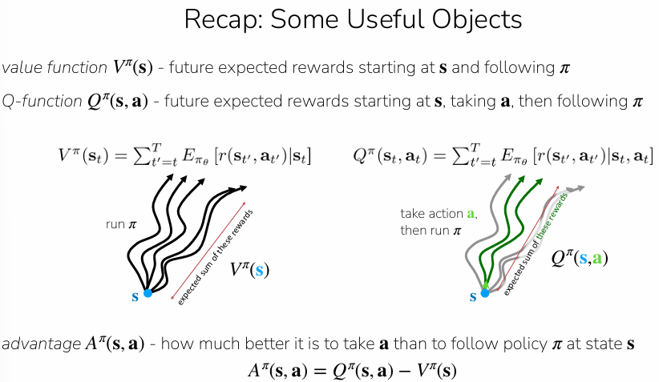

Actor-Critic Methods¶


Improving Policy Gradients¶
Improving policy gradients focuses on making the algorithms more data-efficient and reducing the noise in gradient estimates. According to the sources, this is primarily achieved by moving from simple sample-based reward estimates to more sophisticated methods for estimating future rewards.
The key components of this improvement include:
1. Moving Beyond Single Samples¶
Vanilla policy gradients typically use a single-sample estimate of the "reward-to-go". The sources suggest that using the true expected reward-to-go (\(Q(s_t, a_t)\)) would be significantly better. Better estimates of these values lead to less noisy gradients, which allows the policy to improve more reliably.
2. Using the Advantage Function¶
A major improvement involves using the Advantage function, \(A^\pi(s_t, a_t)\), instead of raw rewards.
- Definition: It is defined as \(A^\pi(s_t, a_t) = Q^\pi(s_t, a_t) - V^\pi(s_t)\).
- Purpose: It represents how much better a specific action (\(a_t\)) is compared to the average expected reward at that state (\(s_t\)).
- Baseline: By subtracting a baseline (like the state-value function \(V^\pi(s_t)\)), the algorithm reduces variance, making the training process more stable.
3. The Actor-Critic Framework¶
These improvements form the basis of Actor-Critic methods. In this framework:
- The Actor: The policy itself, which is updated to do more of the "good" stuff and less of the "bad" stuff.
- The Critic: A learned model (often a neural network) that estimates the expected return (\(V^\pi, Q^\pi, \text{or } A^\pi\)).
Note that both are being learnt.
4. Methods for Estimating Value¶
To improve the policy, the "critic" must accurately evaluate the current policy. The sources outline three ways to perform this policy evaluation:
- Monte Carlo Estimation: Fitting a model directly to the observed sum of future rewards from actual roll-outs.
- Bootstrapping (Temporal Difference Learning): Fitting a model to a target consisting of the current reward plus the value estimate of the next state (\(r + V\)). This is often less noisy than Monte Carlo but can be biased.
- N-step Returns: A hybrid approach that uses the sum of rewards for \(n\) steps plus the value estimate of the state reached at step \(n\). This is often the most effective method in practice.
Note: Only need to estimate \(V^\pi\)

1. Monte Carlo Estimation¶
Run the whole episode, sum all the rewards, use that as training label.
Episode 1: s₀ → s₁ → s₂ → ... → s_T (total return: 12)
Episode 2: s₀ → s₁ → s₃ → ... → s_T (total return: 3)
Episode 3: s₀ → s₄ → s₂ → ... → s_T (total return: 8)
...
Episode 1000: ... (total return: 10)
This method involves sampling actual "roll-outs" from the policy and using the observed sum of rewards as a target.
- The Process: You collect a batch of data and aggregate single-sample estimates of the "reward-to-go".
- Target: For a state \(s_t\), the target value is the actual sum of rewards from that point until the end of the episode: \(y_{i,t} \approx \sum_{t'=t}^{T} r(s_{i,t'}, a_{i,t'})\).
- Supervised Learning: You then use supervised learning to train a neural network (\(\hat{V}_\phi^\pi\)) to minimize the difference between its predictions and these actual summed rewards.

2. Bootstrapping (Temporal Difference Learning)¶
Instead of waiting for an episode to end, bootstrapping uses the current reward plus the model’s own estimate of the next state's value.
- Target: \(y_{i,t} \approx r(s_{i,t}, a_{i,t}) + \hat{V}_\phi^\pi(s_{i,t+1})\).
- Iterative Updates: Because the target depends on the current model, the labels are updated every time the gradient is updated.
- Trade-off: This method typically has less variance than Monte Carlo estimation but can introduce bias because it relies on the model's own (initially inaccurate) predictions.

repeat:
run policy in environment, collect (s, a, r, s') tuples
update critic: "your prediction for s was 5.0,
but r + prediction(s') = 7.0,
so adjust"
update actor: "action a in state s got more reward
than the critic expected,
so make a more likely in s"
Monte Carlo Estimation vs Bootstrapping¶
- Monte Carlo uses full returns from actual sampled trajectories, so the target includes all the randomness from future rewards and transitions.
- Bootstrapping uses an estimated value function to stand in for part of the future return, which cuts off some of that randomness.
So the usual tradeoff is:
- Monte Carlo: lower bias, higher variance
- Bootstrapping: higher bias, lower variance
One useful way to remember it:
- More sampled future rewards → more variance
- More reliance on learned value estimates → less variance, more bias
3. N-Step Returns (The Hybrid Approach)¶
This is a "middle ground" that often works best in practice.
- The Process: You sum the next \(n\) rewards from an actual roll-out and then add the model's estimate for the \((n+1)\)-th state.
- The Target: \(y_{i,t} \approx \sum_{t0=t}^{t+n-1} r(s_{i,t0}, a_{i,t0}) + \hat{V}_\phi^\pi(s_{i,t+n})\).
- Benefit: It balances the high variance of Monte Carlo (by using fewer samples) with the bias of bootstrapping (by using more real data before relying on an estimate)
- More real steps (bigger n) → less bias, because relying less on the critic's potentially wrong estimate
- Fewer real steps (smaller n) → less variance, because not accumulating noise from many stochastic transitions

The Role of Discount Factors (\(\gamma\))¶
When estimating values, especially for very long or infinite episodes, a discount factor (\(\gamma\)) is used. This ensures rewards received sooner are weighted more heavily than those received later, preventing value estimates from growing infinitely large. A common value used in practice is 0.99.

Fitting the Model¶
In all these methods, the final step is to perform supervised learning on a neural network with parameters \(\phi\). The loss function used is typically a mean squared error between the estimated value and the chosen target (\(y_i\)): \(\mathcal{L}(\phi) = \frac{1}{N} \sum_{i} ||\hat{V}_\phi^\pi(s_i) - y_i||^2\).

5. Off-Policy Improvements¶
To further increase data efficiency, the sources discuss off-policy methods, which allow the algorithm to reuse data from past policies rather than just the current one. This often involves:
- Replay Buffers: Storing all past trial-and-error data to reuse in updates.
- Importance Weights: Adjusting the gradient calculations to account for the fact that the data was collected by a different version of the policy.
Off-Policy Actor-Critic: Multiple Gradient Steps¶
Problem¶
In vanilla on-policy actor-critic, we:
- Collect one batch of data from policy \(\pi_\theta\)
- Take one gradient step
- Throw away the data and recollect
This is wasteful. Can we take multiple gradient steps on the same batch?
Step 1: The On-Policy Gradient (Starting Point)¶
The standard policy gradient with advantages:
\(\nabla_\theta J(\theta) \approx \frac{1}{N} \sum_{i=1}^{N} \sum_{t=1}^{T} \nabla_\theta \log \pi_\theta(a_{i,t} | s_{i,t}) \hat{A}^{\pi_\theta}(s_{i,t}, a_{i,t})\)
Problem: After one gradient step, \(\theta\) changes to \(\theta'\), but the data was collected under \(\theta\). The gradient formula above assumes data came from \(\pi_\theta\), not \(\pi_{\theta'}\).
Step 2: Importance Weights Fix the Distribution Mismatch¶
To use data from \(\pi_\theta\) while updating \(\pi_{\theta'}\), we multiply by importance weights:
\(\nabla_{\theta'} J(\theta') \approx \sum_{t,i} \frac{\pi_{\theta'}(a_{i,t} | s_{i,t})}{\pi_\theta(a_{i,t} | s_{i,t})} \nabla_{\theta'} \log \pi_{\theta'}(a_{t,i} | s_{t,i}) \hat{A}^{\pi_\theta}(s_{t,i}, a_{t,i})\)
Intuition: The ratio \(\frac{\pi_{\theta'}}{\pi_\theta}\) reweights each sample to account for the fact that \(\theta'\) would have taken these actions with different probabilities than \(\theta\).
Step 3: The Surrogate Objective¶
Using the identity \(p_\theta(\tau) \nabla_\theta \log p_\theta(\tau) = \nabla_\theta p_\theta(\tau)\), we can write an equivalent surrogate objective that we maximize directly:
\(\tilde{J}(\theta') \approx \sum_{t,i} \frac{\pi_{\theta'}(a_{i,t} | s_{i,t})}{\pi_\theta(a_{i,t} | s_{i,t})} \hat{A}^{\pi_\theta}(s_{t,i}, a_{t,i})\)
The gradient of this objective w.r.t. \(\theta'\) gives us exactly the importance-weighted policy gradient from Step 2.
Step 4: What Goes Wrong with Many Gradient Steps¶
If we maximize \(\tilde{J}(\theta')\) with many gradient steps:
- The advantages \(\hat{A}^{\pi_\theta}\) are computed under the old policy \(\pi_\theta\)
- The optimizer will push \(\pi_{\theta'}\) to put massive probability on actions that had high advantage
- The importance ratio \(\frac{\pi_{\theta'}}{\pi_\theta}\) can blow up (e.g., become 100x or 1000x)
- Result: \(\pi_{\theta'}\) diverges far from \(\pi_\theta\), and the advantage estimates become meaningless → overfitting / policy collapse
Step 5: Two Ideas to Fix This¶
Idea 1 — KL Constraint¶
Constrain how far \(\theta'\) can drift from \(\theta\):
\(\mathbb{E}{s \sim \pi\theta} \left[ D_{KL}(\pi_{\theta'}(\cdot | s) | \pi_\theta(\cdot | s)) \right] \leq \delta\)
This is used heavily in TRPO and later in LLM preference optimization (RLHF).
Idea 2 — Clip the Importance Weights (PPO's approach)¶
Don't constrain the policy directly, but remove the incentive for the policy to diverge by bounding the ratio.
Step 6: PPO Trick #1 — Clipping¶
Clip the importance ratio to \([1 - \epsilon, \ 1 + \epsilon]\)
\(\tilde{J}(\theta') \approx \sum_{t,i} \text{clip}\left(\frac{\pi_{\theta'}(a_{i,t} | s_{i,t})}{\pi_\theta(a_{i,t} | s_{i,t})}, \ 1 - \epsilon, \ 1 + \epsilon \right) \hat{A}^{\pi_\theta}(s_{t,i}, a_{t,i})\)
Effect: Even if \(\pi_{\theta'}\) wants to put 100x more probability on a high-advantage action, the clipped ratio caps the benefit at \((1 + \epsilon)\). No incentive to deviate further.
Step 7: PPO Trick #2 — Pessimistic Minimum¶
In rare cases, clipping can accidentally make the objective better than the unclipped version. PPO takes the minimum of both to be conservative:
\(\tilde{J}(\theta') \approx \sum_{t,i} \min\left( \frac{\pi_{\theta'}}{\pi_\theta} \hat{A}^{\pi_\theta}, \quad \text{clip}\left(\frac{\pi_{\theta'}}{\pi_\theta}, 1-\epsilon, 1+\epsilon\right) \hat{A}^{\pi_\theta} \right)\)
This is the final PPO surrogate objective.
Step 8: PPO Trick #3 — Generalized Advantage Estimation (GAE)¶
Instead of using a single n-step advantage estimate, GAE blends multiple horizons:
n-step advantage:
\(\hat{A}_n^\pi(s_t, a_t) = \sum_{t'=t}^{t+n} \gamma^{t'-t} r(s_{t'}, a_{t'}) - \hat{V}_\phi^\pi(s_t) + \gamma^n \hat{V}_\phi^\pi(s_{t+n})\)
GAE = weighted sum of all n-step estimates \(\hat{A}_n^\pi(s_t, a_t)\):
\(\hat{A}_{GAE}^\pi(s_t, a_t) = \sum_{n=1}^{\infty} w_n \hat{A}_n^\pi(s_t, a_t)\)
Weights decay exponentially: \(w_n \propto \lambda^{n-1}\)
- Small \(\lambda\) → more weight on short horizons → low variance, high bias
- Large \(\lambda\) → more weight on long horizons → high variance, low bias
The Full PPO Algorithm¶
- Sample batch of trajectories \({(s_{1,i}, a_{1,i}, \ldots, s_{T,i}, a_{T,i})}\) from \(\pi_\theta\).
- Fit \(\hat{V}_\phi^{\pi\theta}\) to sampled reward sums.
- Compute \(\hat{A}_{GAE}^\pi\) for all \((s,a)\) pairs in batch.
- Take \(M\) gradient steps on the clipped surrogate objective.
- Go back to step 1.
Typical Hyperparameters¶
| Parameter | Value |
|---|---|
| Batch size | ~2000 timesteps |
| Policy update epochs | ~10 |
| Gradient steps per iteration | ~300 (batch size 64) |
| Clipping range \(\epsilon\) | 0.2 |
| Total iterations | ~500 → 1M timesteps |
Key Takeaway¶
PPO = "take multiple gradient steps on the same batch, but don't let the policy change too much." The clipped surrogate objective is a simple, effective way to enforce this without explicitly computing KL divergences.
Replay Buffers¶
Motivation¶
PPO reuses one batch for multiple gradient steps. But can we go further — reuse all past data from previous batches? This is "fully off-policy."
Two key ideas: (1) maintain a replay buffer of all past transitions, (2) fix the equations so they work with off-policy data.
The Naive (Broken) Algorithm¶
Start with the on-policy actor-critic but sample from the replay buffer instead:
- Collect experience from \(\pi_\theta\), store \((s, a, s', r)\) in buffer \(\mathcal{R}\)
- Sample minibatch \({s_i, a_i, r_i, s'_i}\) from \(\mathcal{R}\)
- Update \(\hat{V}^\pi_\phi\) using targets: \(y_i = r_i + \gamma \hat{V}^\pi_\phi(s'_i)\)
- Evaluate advantage: \(\hat{A}^\pi(s_i, a_i) = r(s_i, a_i) + \gamma \hat{V}^\pi_\phi(s'i) - \hat{V}^\pi\phi(s_i)\)
- Compute policy gradient: \(\nabla_\theta J(\theta) \approx \frac{1}{N} \sum_i \nabla_\theta \log \pi_\theta(a_i | s_i) , \hat{A}^\pi(s_i, a_i)\)
- Update parameters: \(\theta \leftarrow \theta + \alpha \nabla_\theta J(\theta)\)
Why is this broken?
Two problems:
Problem 1 — Value function targets are wrong. The target \(y_i = r_i + γV̂(s'_i)\) assumes the next-state value is computed under the current policy \(π_θ\). But the transition \((s_i, a_i, s'_i)\) came from an old policy. The future reward from \(s'_i\) depends on what action you'd take there. \(V(s')\) bakes in the assumption that you follow \(\pi\) — but the data was generated by some old \(π_{old}\). The value function is learning something that doesn't correspond to any single policy.
Problem 2 — Policy gradient uses wrong actions. Step 5 computes \(∇_θ log π_θ(a_i|s_i)\) — but \(a_i\) was chosen by the old policy, not the current one. The advantage \(Â^π(s_i, a_i)\) evaluates how good that old action was, but we need to evaluate actions the current policy would take.

The Fix: Use \(Q(s, a)\) Instead of \(V(s)\)¶
Key insight: \(V(s)\) implicitly depends on which policy's actions you average over. But \(Q(s, a)\) takes the action as an explicit input — so it doesn't matter who chose action a. You can evaluate \(Q\) on any \((s, a)\) pair regardless of which policy generated it.
Recall the Bellman equation for Q:
\(Q^{π_θ}(s, a) = r(s, a) + γ 𝔼_{s' ~ p(·|s,a), ā' ~ π_θ(·|s')} [Q^{π_θ}(s', ā')]\)
The next-state action \(ā'\) is sampled from the current policy \(π_θ\), not from the buffer. This is what makes it valid for off-policy data.
The Fixed Algorithm (Step by Step)¶
Step 1: Collect & Store
Take action \(a ~ π_θ(a|s)\), observe \((s, a, s', r)\), store in replay buffer \(R\).
Step 2: Sample Minibatch
Sample batch \({s_i, a_i, r_i, s'_i}\) from buffer \(R\). These transitions may be from old policies — that's fine.
Step 3: Update Q-function
For each sampled transition, compute the target:
- Sample fresh action from current policy: \(ā'_i ~ π_θ(·|s'_i)\)
- Compute target: \(y_i = r(s_i, a_i) + γQ̂^π_ϕ(s'_i, ā'_i)\)
Note: \(s_i\) and \(a_i\) are from the buffer (old policy), but \(ā'_i\) is from the current policy. This is the critical fix — the bootstrap target uses the current policy's action at the next state.
Minimize the loss:
\(L(ϕ) = \frac1N * Σ_i ‖Q̂^π_ϕ(s_i, a_i) - y_i‖²\)
Step 4: Update Policy
Now we also fix the policy gradient. Instead of using buffer actions, sample new actions from the current policy:
- Sample: \(a^π_i ~ π_θ(·|s_i)\)
Compute gradient:
\(∇_θ J(θ) ≈ \frac1N Σ_i ∇_θ log π_θ(a^π_i|s_i) · Q̂^π(s_i, a^π_i)\)
Both the action \(a^π_i\) and the Q-evaluation use the current policy — not the buffer's actions.
Note: we use \(Q̂\) directly here instead of the advantage \(Â = Q - V\). This is higher variance (no baseline subtraction), but acceptable because we now have much more data from the full replay buffer.
Step 5: Gradient Update
\(θ ← θ + α∇_θ J(θ)\)

Remaining Issue¶
The states \(s_i\) in the buffer didn't come from the current policy's state distribution \(p_θ(s)\). There's nothing we can do about this — we just accept it.
Intuition for why it's okay: We want an optimal policy on \(p_θ(s)\), but we're optimizing on a broader state distribution (mix of all past policies). In practice, optimizing on a broader distribution often still works and can even help with generalization.
Implementation Detail: Reparameterization Trick¶
For continuous actions with a Gaussian policy, instead of using the log-likelihood policy gradient, you can use the reparameterization trick to get a lower-variance gradient estimate:
\(a = μ_θ(s) + σ_θ(s) · ε\), where ε ~ N(0, 1)
This lets you backprop through the action sampling directly into \(Q̂\), rather than relying on the REINFORCE-style log π gradient.
This Becomes SAC (Soft Actor-Critic)¶
The practical instantiation of this approach is SAC (Haarnoja et al., 2018), which adds entropy regularization and some Q-function fitting tricks (twin Q-networks, target networks — covered in later lectures).
PPO vs SAC — When to Use Which¶
| PPO | SAC | |
|---|---|---|
| Off-policy degree | Mild (multiple steps on one batch) | Full (replay buffer of all past data) |
| Data efficiency | Lower | Much higher |
| Stability | More stable, easier to tune | Harder to tune, less stable |
| Best for | Simulation (cheap data), LLM RLHF | Real-world RL (expensive data) |